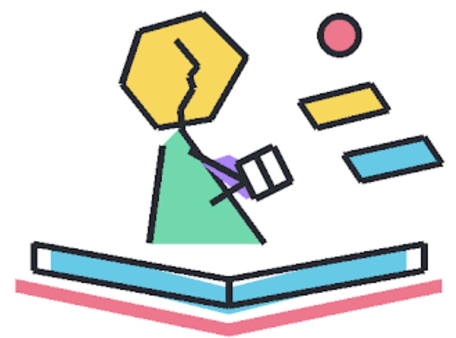
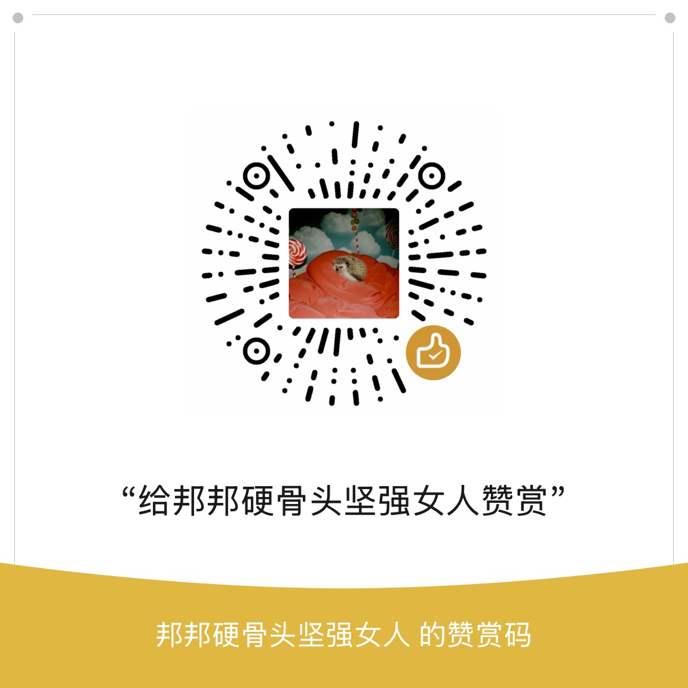

维护有一点成本，可随缘赞助和开通致谢权益。
展开 ▾

千屿姝读
今日关键词
共 位 · 你点亮了 0 位
同代人时间轴
她说
女性主义者吵了几十年，中文互联网也在吵。分歧本身就是内容。
每一条观点都归到一个具名的、有分量的女性，并附出处。没有「有人说」，也不收男性观点。
每一条观点都归到一个具名的、有分量的女性，并附出处。没有「有人说」，也不收男性观点。
输入一个困惑——男性凝视、彩礼、堕胎权、独居、生育……看看有分量的女性怎么说。找不到就换个说法，或按大类翻。
正在被讨论的问题
系统地看：女性主义不是一种声音，是一场持续了一百多年的争论。
四次浪潮
分期是粗线条的，点开看这一波具体在争什么。
13 个流派
点开每一派可以看到它在处理什么、常见的误读、关键文本，以及和它对着干的是谁。
这页是索引，不是定论。每一派内部也还在吵。
今天想读点什么
按状态挑，或者按题材挑。只从已收录的东西里抽。
闲趣
给读书找几个借口。拉开一个抽屉试试。
读过就点一格，填上是谁。连成一条线算一次 Bingo。
0/16
已连成 0 线
限定条件，不选也行
状态
题材
摇
输一个年龄，看看谁在这个岁数出版了自己的开刃作。
以下两位，你选谁。已选 0 次。
攒了一百件不用花什么钱、也不用为难自己的事。抽一件，做不做随你。
今天不知道写什么？
给你一个起点，剩下的是你的。
记录
书目、状态、日期、妙与瑕、读后感、手账——你自己的那一份，全在这里。
我的
账号、两面墙、手册，和这台设备上的设置。
装到桌面、别让浏览器清掉记录、导出备份、界面风格。
都是这台设备上的事，跟账号无关。
界面风格
换的是整站的皮肤：初始 / 拼贴 / 山水 / 像素 / 梦核 / 夜读 / 奶油 / 套印 / 毛毡。
只换外观，记录一个字不动。手账纸和地图是画出来的，不跟着变色。
0
已点亮
0
走过的区域
0/11
已镀金板块
你的阅读报告
不是数数，是从你的记录里找出几件值得说的事。可以看全部，也可以只看今年。
全部免费，导出无水印。
选定时长就要读完，提前停下本次作废；正计时随时可停。已经拼好的图任何情况下都不会碎。
读满一小时得一块砖，砖可以自选颜色砌进画布。
自习室里坐在桌子这一边的，就是她。带 ◇ 的部件属 10 元全部功能档；肤色和发色一直免费。
解锁条件全部从你自己的记录实算，和付不付费无关。登录后记录会随账号备份。
明信片、藏书票——都在本机生成，可以存下来印出来，也可以就放着看。
注册一个昵称，网页和小程序就能用同一份点亮记录，换设备也不会丢。
忘记密码？如果小程序上还登录着，可以在小程序里直接重设；
否则到公众号「全在场XX部」联系作者重置。
作家资料库是一个人做的，一直免费。收录 位女性创作者——写小说的、做学问的、做翻译的、拍电影的、写剧本的、画绘本的，共 部作品， 个区域板块， 个流派。
数据还在继续整理和校对——发现错漏，或者想推荐没被收进来的人，都欢迎告诉我。
地图与「女性作家」这一栏永久免费。维护有一点成本，可随缘赞助和开通致谢权益。
公众号 全在场XX部

微信赞赏
扫码关注公众号
千屿姝读 · ISLANDSREAD